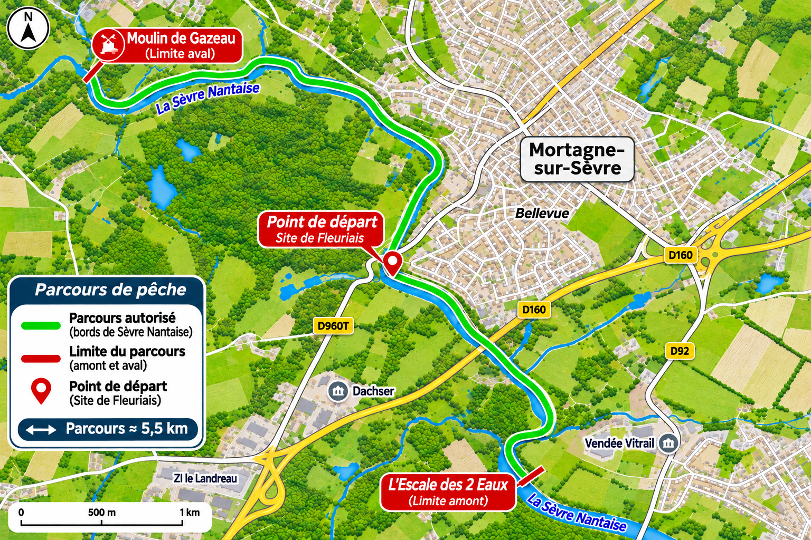

Accès rapide
Vérification des horaires…
5e ÉDITION · EN DUO
Dimanche 13 juin 2027
- Concours
- 7 h 30 – 12 h 30
- Rendez-vous
- Local de Fleuriais
Mortagne-sur-Sèvre - Accueil
- Arrivée dès 6 h 30
Briefing de 7 h à 7 h 30
Actualisation automatique toutes les 15 secondes.
Préparation du mode hors ligne…
Retrouve le concours depuis ton écran d’accueil.
Comment faire ?
L’installation est facultative : tu peux utiliser directement le site. Ajoute-le à ton écran d’accueil pour un accès rapide.
Android : ouvre ce site dans Chrome, puis menu ⋮ → Installer l’application ou Ajouter à l’écran d’accueil.
iPhone : ouvre ce site dans Safari, puis Partager → Sur l’écran d’accueil → Ajouter.
ESPACE PARTICIPANT
Mon compte
Un compte pour les deux pêcheurs de ton équipe.
Retrouver mon équipe
Saisis les identifiants de ton compte existant.
8 caractères minimum. Après la création du compte, tu renseigneras les deux pêcheurs.
À cocher sur ton téléphone personnel. La connexion sera conservée après fermeture.
Connecté :
Inscrire mon duo
Un seul compte par équipe : celui du responsable. 40 équipes maximum. Le staff confirme les places et attribue les numéros.
Responsable
Second pêcheur
Règlement et parcours
Les informations utiles pour préparer ton concours.
Lire le règlement et le barème
Règlement Street Fishing Mortagne 2027
Dimanche 13 juin 2027 • 5e édition
Rencontre amicale en duo organisée par Le Gardon Mortagnais.
Inscription et participation
Le concours accueille 40 équipes maximum, composées de deux pêcheurs. Le tarif est de 40 € par équipe, repas compris.
L’inscription se fait directement dans cette application. Crée le compte de ton équipe, puis renseigne les deux pêcheurs. La place est confirmée après validation par l’organisation. Clôture quatre jours avant le concours, ou dès que les 40 équipes sont inscrites.
Chaque pêcheur doit posséder une carte de pêche valide. Participation à partir de 12 ans ; les mineurs sont accompagnés de leur responsable légal. Aucun remboursement en cas de désistement.
Programme de la journée
| Horaire | Rendez-vous |
|---|---|
| 6 h 30 | Arrivée des participants |
| 7 h à 7 h 30 | Accueil et briefing au local de Fleuriais |
| 7 h 30 à 12 h 30 | Concours |
| 13 h | Remise des lots |
| 13 h 30 | Repas |
Parcours et pratique
Le parcours autorisé est présenté au briefing. Pêche du bord, déplacements à pied et leurres artificiels uniquement. Les appâts naturels sont interdits.
Respectez les tailles et restrictions réglementaires rappelées par l’organisation.
Déclarer une prise
Chaque poisson doit être photographié, déclaré dans l’application et validé par le staff pour compter dans le classement.
1 Préparer le téléphone
Prévoyez un téléphone chargé. Avant le départ, ouvrez l’application avec du réseau et connectez-vous au compte de l’équipe. Un seul compte est nécessaire pour les deux pêcheurs.
2 Mesurer et photographier
Posez le poisson sur la toise prêtée, bouche au repère zéro. La photo doit être nette, montrer le poisson entier et permettre de lire la mesure.
Mesurez la longueur totale, de la bouche au bout de la queue. Saisissez la longueur en millimètres : 30 cm = 300 mm.
3 Envoyer la prise
Dans l’onglet Prise, prenez la photo avec le téléphone ou choisissez-la dans votre galerie si le staff l’autorise, puis indiquez l’espèce et la longueur. Vérifiez que l’envoi a bien abouti. Un même poisson ne peut être déclaré qu’une seule fois.
Si le réseau est indisponible
Conservez la photo originale sur le téléphone. Sans réseau, enregistrez la prise sur ce téléphone. Rouvrez l’application avec du réseau pour la transmettre pendant l’ouverture des prises. Si le concours est terminé, contactez le staff avec votre brouillon.
En cas de difficulté, prévenez le staff avant la clôture du classement et présentez les photos originales.
Respecter les poissons et les autres usagers
Remettez chaque poisson à l’eau vivant immédiatement après la mesure et la photo. Manipulez-le avec précaution. Hameçons simples sans ardillon et épuisette caoutchoutée conseillés.
Gardez au moins cinq mètres avec les autres participants. Respectez les riverains, les propriétés et la nature ; emportez vos déchets.
Points et classement
Cinq espèces sont comptabilisées : brochet, sandre, perche, chevesne et silure. Le black-bass est exclu.
Barème des prises
Points = longueur en millimètres × coefficient. Le résultat est arrondi au point entier le plus proche.
| Espèce | Coefficient |
|---|---|
| Brochet | — |
| Sandre | — |
| Perche | — |
| Chevesne | — |
| Silure | — |
Chargement du barème officiel…
Le concours comptabilise les prises des cinq espèces retenues quelle que soit leur taille. Respectez les restrictions réglementaires. Black-bass hors concours.
Bonus par équipe
| Espèces différentes validées | Bonus total |
|---|---|
| 1 ou 2 espèces | 0 point |
| 3 ou 4 espèces | 300 points |
| Les 5 espèces | 500 points |
Le bonus de 500 points remplace celui de 300 points. Ils ne se cumulent pas.
Validation et résultat
Seules les prises validées par le staff comptent. Le staff peut corriger ou refuser une prise. Le classement reste provisoire jusqu’à l’annonce des résultats.
Le score est la somme des points des prises validées et du bonus. L’équipe ayant le plus de points gagne. En cas d’égalité, le plus grand nombre de poissons validés départage les équipes.
Sécurité et sanctions
Suivez les consignes du staff. L’organisation peut interrompre ou annuler la rencontre pour des raisons de sécurité. Toute fraude, conduite dangereuse ou infraction peut entraîner le refus d’une prise ou l’exclusion de l’équipe.
Contact : legardonmortagnais85@gmail.com · 06 68 04 75 52
Voir la carte du parcours
Carte du parcours
Le tracé vert indique le parcours. Le point de départ est repéré en rouge. Les limites et les consignes seront rappelées au briefing.
